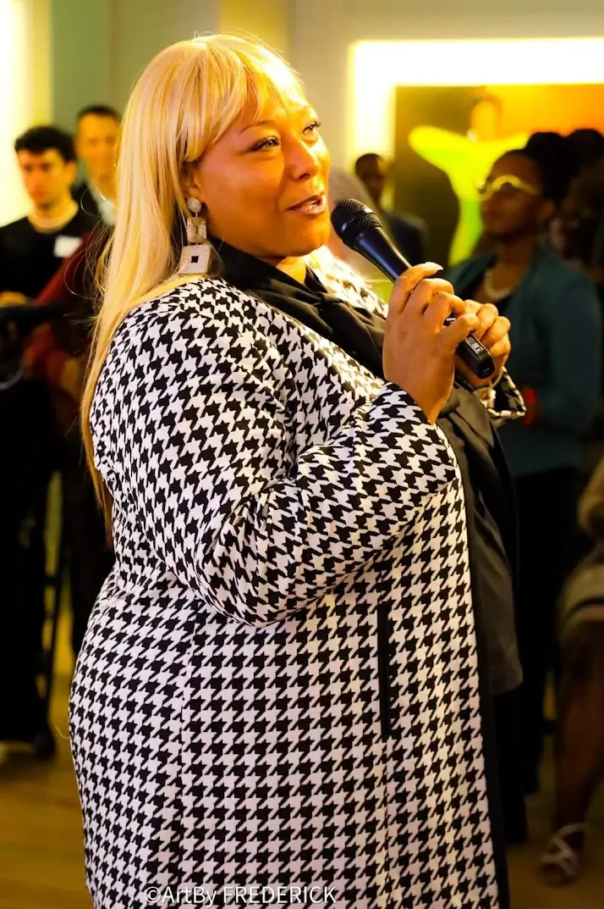

Who I am
I've lived both sides of almost everything.
I've held a Section 8 voucher and I've sat in the COO's chair of a $12M organization. I've built financial systems and I've built a really good pot of greens. The range isn't a contradiction — it's the whole point.
I was born in Shreveport and grew up in Minden, Louisiana — until 1990, when I moved to Auburn, Washington, then Seattle, and Bellevue since 2020. I've built a life, and a body of work, in every one of those rooms.
“Inclusion is not charity. It is infrastructure.”
I'm a writer, a systems strategist, a researcher, and a maker — appointed three times by the State of Washington, published, peer-selected to speak, and endlessly curious about how people and systems stay whole.
Where I serve
- Interim Treasurer, SPLASHForward
- Board, The Sophia Way · Governance Committee
- Board, Bellevue Chamber
- Member, WA Commerce CRP Sea-King LAT
2008
Leading operations since
2021
Founded ToyBox Consulting & Management LLC
10
City of Seattle consultant rosters I was selected to
4
Board and civic seats